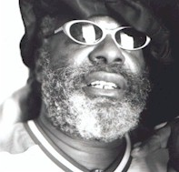
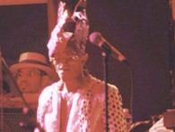
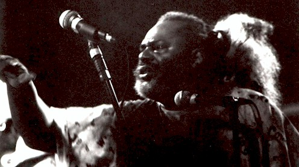

|
MICHIGAN MUSIC |
JULY,
2000 |
|
|
Exclusive |
George
Clinton Speaks |
INTERVIEW AND
PHOTOS BY P. T. QUINN |
|
|
| Comment From The Editor |
| In 1979, while I was an executive with George
Clinton's now defunked record label, I was made a lifetime member of the Funk, with a
certificate and the whole bit. George was at the top of his game at the time and his
stage life looked rosy. |
| Then came the business failure of his Uncle Jam Record
Company, the loss of lucrative record deals, and many in the industry simply "wrote
him off." |
| Today George Clinton is again as popular and as
influential of an artist as he ever has been. He has remarkable "staying
power" and continues to "do his Thang" while ignoring the little bumps in
the long road of his career. |
| We were happy to get an exclusive interview with him
while other magazines were "locked out" by his management. Fellow Funkster
Murgua simply arranged it, knowing that George treats "his own" well. To
give the REQ reader some more background, I have included part of a companion interview
with Muruga, called Muruga Responds. |
| - Bob Dennis |
|
|  |
George Clinton - July, 2000 |
We’re movin’ back ..to Michigan |
|
|
|
| Detroit, Michigan: George
Clinton is a lot of things to a lot of people. Most famously as being the purveyor
of Detroit origin funk. That bass bottom music which revolutionized pop and brought
Detroit into the eyes of the dancing world. Yes, he’s a father, husband,
grandpa, but is a preservationist and iconoclastic father head who leads his P-Funk
Allstars into a realm that’s otherworldly in its power and musicianship. |
| The P-Funk might be as many as 20 or more
participants. When they played at St. Andrews Hall in Detroit recently, the music
kept going through several shift changes. The appreciative crowd had their senses
delightfully overloaded in what turned out to be a long night for the Lord of Funk.
After the 3 1/2 hour gig, he went into the studio until 6 AM! That kind of energy from a
man who has survived himself for over 30 years, seen many come and go, and tragically lose
his son bassman Darrel. George burst into the Motown scene with the Parliament,
evolved into the Funkadelic and P-Funk, as well as play the Grammies and tour with the
Chili Peppers. Yeah, he’s legendary, and now that Jerry Garcia is gone, Deadheads
have embraced him as one of their own. The music is real. It taps in to the raw with a
synergy of expression that covers the whole gamit of human experience. |
| When my friend percussionist Muruga Booker
told me he was going to play with the Funk, I tagged along. Muruga’s son web-guy
Aaron was there too. After Muruga mentioned to me he was going up to George’s
hotel room before the gig, I thought it a grand opportunity to meet the man. Oh boy,
did I get lucky. George’s wife and personal manager Stephanie greeted us. A
happy reunion for Muruga and the Clintons. George and Stephanie love Aaron and have
known him nearly all his life. The first impression I had upon meeting George, was
that he was friendly and low keyed. There’s a gracious sincere gentleness about
him. The unknowing would never guess the magnificent transformation he makes from a
candid setting into his stage persona. Outlandish, brilliant, the funkiest showman
on the planet is a hero to a lot of people. All those people. Surprisingly to
me, he was agreeable to let me interview and photograph him. What do you ask of the
demi-god of funk? I did my best....... |
| PT Quinn: How does it
feel to be back in Detroit? George Clinton: I was homesick, I
got over that. I’m glad to be back here. It’s good to be back here.
We were here last year but it was at Clutch Cargo’s up there in Pontiac or
some place up that way. We’ll be back here for good pretty soon.
We’re movin’ back here. |
| PT: To Detroit? George:
To Michigan anyway just outside of the home stretch. |
PT: Are you going to
record here? George: Oh, I’m going to see what I can get into.
You know I can’t go nowhere
without getting into the studio especially in Detroit. I’ll probably break and
enter into a studio if they won’t let me in..... B& E the studio. You know
what I’m saying? Oh yeah, I’m going to do some kind of recording. |
| PT: Why the funk? George:
Why the Funk?? Wow, that’s a hell of a question. (pauses)
That’s sacrilege. |
PT: How come man? George:
Why not the funk? I don’t know no reason why not. Well, we were
too late and too old to be Temptations. We were slick in our younger days, but by
the time we got a hit record with “I Wanna Testify”, the Cream, Led Zeppelin,
and Jimi Hendrex were comin’ over with all of that funky rock & roll stuff... so
even though I love Motown all the while we were doing it, we missed the boat on being
cool. We were just a little bit too old
by the time we got our hit record “Testify” to be you know.....wooing little
girls. I know one thing, character’s don’t get old. Bugs Bunny,
Woody Woodpecker, and Porky Pig don’t get old. We became the
Parli-Funkadelic-ment thang. Funkin’ up things. Then we had our own space, we
weren’t fast rock & roll or slow blues. We had that mid-tempo
music, that nasty music. So that’s where some of my ideas for funk came from. |
| PT: What inspired you to
write “Maggot Brain? George: First of all Eddie Hazel
had a good a good vibe on bluesy slow stuff, and he was real articulate with that kind of
tone. Rock & roll and blues was still happenin’ so once in a while we had
to put some real blues into the thing. Real tears into the picture. Maggot
Brain just happened to be the vibe that we came across. Hendrex, Page and Big
Brother were doing that real good rock & roll and blues and all that stuff. So
we had to knock out a few ballads. You know, “free your mind and your ass will
follow...Maggot Brain.” “Music for my Mother”....we were just
in and around all of that. We were just trying to get some bluesy-nasty music
goin’ on. |
| PT: What’s your
current lineup? George: It’s current..ha-ha.
Bernie Worrell.... PT: From Talking Heads. George:
Yeah.. Muruga: Originally with George. George:
He started with us when he was 14 before he went to college and came back.
He was always a very good classical piano player...at 14 or 15 he was like
that. Bernie and all the rest of the playing field like Billy Bass who was our original
bass player...oh, Wordell “Boogie” Mosson, Blackbird, Michael Hampton. The
P-Funk horns with Greg, Bennie and Scott. Frank Waddy, and Razor Sharp...Peanut
Robert Johnson all from Bootsy’s Rubber Band. Sheila Horne from the Brides of
Funkinstein” My son Tracy. Oh, man. It just goes on and on....... We got a
bunch of guitar players.... Gary Shider, Jerome Rodgers. Shirley Hayden is there
from the Parlette. She’s been with us for the last few weeks. Anybody that will
be celebrating the group will be there. Muruga will be up there bangin’ on the
congo’s and percussion like he has been doin’ for the last 25 years. Ever
since Bakers. (Keyboard Lounge in Detroit) |
|  |
Bernie Worrell - July, 2000 |
He
started with us when he was 14 before he went to college and came back. - G.C. |
|
|
| PT: Sounds like a
family. George: It is a family. Aint nobody stay
together this long and go though the things we do without being a family. You fight,
fuss, kiss, love, and make up and start all over again. It aint no virtual family.
It’s reality. Muruga: A spiritual family. Spiritually
and funkally. |
PT: James Brown had a
dominate bass but you brought it out even more. What about that? George:
Well we got it from James Jameson from Motown. They’re the ones who
named the band the “Funk Brothers” (early). The first electric bass
I can remember being on a record where it was dominate was at Motown....we just took it
from there and went crazy with it. We exaggerated everything that we learned...you
know, bass was definitely the thing that we
learned was the bottom in music. It was one thing that wasn’t illegal on the
radio. So we’d try to give you as much of it as we could. Especially on
pop radio. Bass was like a big d--k. You know what I’m sayin? You just
didn’t put that on the AM radio. FM you could get away with a little bit, but
most of the rock & roll and top 40 didn’t have much bass in it as a matter of
fact. Doo-Wop had a bass voice and guitar, but as far as a bass instrument, it was
James Jameson and them at Motown who put the funk IN. It was so sophisticated it
probably got past a lot of people. They did it in unison with vibes and piano.
The Four Tops and everything. You could’t get away from it, they had
bottom on that stuff. It used to be upright bass, and that was slick, but I put the
electric bass all the way on top. I made the drums
and bass the loudest thing on our records. You can almost run your hand across the
vinyl and feel a lump in it. I tried to make the needle jump up off the record.
Yeah, we accentuated the bass. Every time we hit on something that was truly
funky, we went overboard with it. Free your mind your ass will follow...we just went
totally NUTS! I mean it was the day of the drugs but it wasn’t as much as the
record indicated. Even though the drugs may have given us the nerve to do it, we
weren’t as f--ked up as we sounded. We were out there though, you know what
I’m sayin? But that was pretty much normal at that time. Everybody was
experiencing a new vibe ‘cause that was the thing that stopped the (Vietnam) war.
Tune in, turn on, and drop out. Till the war dropped out it was what
everybody did. But the minute it became for sale..(pauses) it was over too. When
Woodstock happened, drug culture was over, I mean
as a positive thing. It was business after that. It was “do you want to
buy a lid?” And when it becomes that, you got to be careful. |
|  |
George Clinton continues to "do
his Thang" while ignoring the little bumps in the long road of his career. - R. D. |
|
PT: What’s the
funk done for you? George: Everything there is to be done.
I mean it’s been the reason for doing
all that I do. Today is just like the first day that I started. Every day a
brand new chance to do it. To me the pursuit is happiness. Not catchin’ happy.
If I ever caught up with happy I’d probably be bored. The pursuit of
happiness is the trip. |
| PT: Any advice for a
young band that could be helpful? George: Well, I aint
tryin’ to give out no advice and all that, but I’ll tell what I like. That
is I like doing what I do. I think if you like doing what you do it’s a real
big help in getting it done. As long as you like what you’re doing, aint nobody
got to make you do it. You don’t feel like you’re workin’ and
it’s all reward just doing it. I feel successful every time I get a chance to
do it. I don’t have to reach no specific point. For me I’m still
shootin’ for it. |
| PT: If you could
change something about yourself, what would it be? George: To
play the other side of the record! |
Muruga Responds |
INTERVIEW BY BOB
DENNIS, PHOTOS BY P. T. QUINN |
|
|
| In 1979, one of my main assignments for George Clinton
was to produce a group created by Muruga, called The Soda Jerks. |
| It was not my first session with Muruga nor was George
unfamiliar with Muruga. |
| In this interview, Muruga fills in a little of the
background of the Funk in Michigan and his two-decade association with George. |
| - Bob Dennis |
|
|
|
| Bob Dennis: One thing about the interview that PT did with George, he
didn’t talk a lot about your connection with George Clinton and the funk, so our
readers probably don’t know that you were actually signed to the production and
record company that was being formed by George at that time, Uncle Jam. So what can
you say about that period and some of your initial experiences with George? Muguga:
First of all I’d like to say that a long time ago george used to come and see
me play at Bakers Keyboard Lounge. I was with Darious Brubeck and that is one of his first
recollections of me. And I rember Morrie, owner of the Chess Mate Club, called me
and said there’s this outragious group playing here, and I came down and saw
one of the funkiest bands I ever saw. It was George with his 5 to 6 piece
group. Then in 1977 or 1978, I came back from new york and my friend,
Joey Z, took me to see George record – he was doing something at United Sound.
He said, "So what have you been doing." I said I just came back from
New York and put together the group caled Soda Jerks – I sorta gave him a quick rap,
that I had lived a couple years as a monk and I played with Weather Report, and Brubeck.
[I told him that:] I saw a guy on TV that had been playing guitar for 6 months and he had
a hit record, and that sorta inspired me. (I had always wanted to play a little guitar)
– So I got a guitar and started writing songs to open E tuning. I put together
a group called the soda jerks – I made my wife play drums and I played the
guitar and everybody in the group had to play something that they didn’t play before.
I told him (george) that I loved the funk and I saw the conciences of it (cause it does
stem from Godspel music – mixing that with James brown and jimmy hendrix kinda
styles). He said well anybody that could play with Dave Brubeck to Weather Report,
like the funk and come out of being a monk and want to do "The Soda Jerks" -
"I’ll give him a recording contract sight unseen and sound unheard!"
He said "We are recording down at the Disc and also at Superlycs and come on down
there." I came down we did one or two quick demos. Here for 20 years I
was recording for name groups like Weather Report and Winter Consort and so on – but
nobody gave me a personal recording contract. When I started playing guitar and
writing songs I got a recording contract. … You have to have a direction – I got
the direction of the soda jerks from [one time having a job of] packing the soda pop on
the truck and [thinking of] how I started to listen to music in the soda shop in the
40’s. |
| Bob: Somehow you managed to get on 6 or 7 of Georges hit albums at the same time - him
calling you in as a percusssionist for the other groups. Muruga:
One of the good things about hanging around at the Disc and Superlycs was that I was
around his sessions and he would invite me to his sessions as well. Seeing me
play guitar and seeing me sing the soda jerks he almost forgot that i was a regular
drummer and that I was serriously doing drums and percussion. One day with Sly [Stone] and
George, theyt were doing a tune, and I began playing my Nada Drum [Muruga's invention] and
they said "listen to this dude play that stuff" and "put him on some
tracks" So the next thing you know I started recording tracks with them
Some of it was "Urban Gollorlias," "Smell My Finger," and "Atomic
Dog" - the things from about 1980 to 1985 - I began hanging around with them in the
studio weither I was doing my session or theirs. |
| Bob: How
was it this most recent concert and session? Muruga: George
is doing fantastic...He seems very healthy - his energies are very strong. We had a
fantastic gig at St. Andrews, .... and afterwards we went and recorded until 6 in the
morning at a studio two blocks away, The White Room ... fantastic session ... wonderful
session ...went until 6:30 in the morning. |
| Bob: Unfortunately
we don't have a ton of room but i wanted to get your input on his interview - it was a
nice interview, good to hear that George plans to move back .... maybe one of these days
we'll all get together with me behind the board, you and George and a couple of other mugs
and go at it again Muruga: Its something we should do -
looking forward to that... and Hello to all you internet readers - keep the funk up - keep
the music up ... that's what's its all about - that's what the P in P-Funk is, its the
real, its the pure .... God Bless the world. |
|
Copyright © 2000, by P. T.
Quinn, ALL RIGHTS RESERVED |
Published in Recording
Engineer's Quarterly Magazine with permission |
USE OF THIS ARTICLE SUBJECT TO USER AGREEMENT |
|
|
|
|